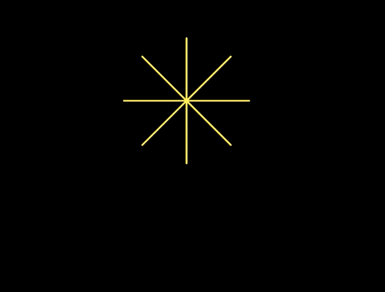

Remix je molen
molenblok, asterisk- en
veelhoekblokken maken.

Je bestaande molen-stappenplan kan je gebruiken om veel verschillende vormen te maken. Je kan daardoor de code aanpassen om een simpel stappenplan te maken voor maar één specifieke vorm.

- Open je H1L3-Molen project van de vorige pagina.
- Gebruik je
molenblok om nu een meer gespecialiseerdmolenblok te maken.- Maak eerst een nieuw
asteriskblok met twee variabelen: een voor het aantal wieken en een voor de wieklengte. Je kan hier terugzien hoe je een blok maakt: Hoofdstuk 1 Les 2 Pagina 3: Maak je eigen blok. - Voer de drie waarden voor je
molenin, zodat het een asterisk tekent.
- Maak eerst een nieuw
- Schrijf op dezelfde manier een
veelhoekblok dat eenmolen(blok) gebruikt, met de juiste waardes om een veelhoek te tekenen met een bepaald aantal zijden en zijde-lengtes.
Het gebruik van een blok dat je al eerder geschreven hebt om een ander blok te helpen schrijven, is een voorbeeld van abstractie. Abstractie is een van de meest belangrijke ideeën in de informatica,
maar het kent geen simpele definitie. In deze les betekent abstractie het gebruiken van een
algemeen blok (molen) om meerdere specifieke blokken te maken (asterisk en
veelhoek). Er zijn nog veel andere varianten van abstractie, die zullen we aangeven als
ze langskomen.
Als je een stukje script wilt kopiëren van het ene script naar het andere, overweeg dan om abstractie toe te passen door een algemeen blok te schrijven. Een stukje script kopiëren en plakken gaat sneller en lijkt misschien de beste oplossing. Maar door een algemener blok te schrijven, wordt je code vaak korter en duidelijker. En breder toepasbaar.
- Als je kijkt naar je
molenblok en ziet hoe dit gebruikt wordt inveelhoek, dan zie je dat er stappen zijn die je niet echt nodig hebt voor een veelhoek. Maak nog een versie vanveelhoekmet alleen primitieve blokken (neem stappen,draai gradenenzovoort). Hoe simpel kan je het maken?
- Gebruik je
molenblok nog een keer om eencirkelblok te maken dat een invoer heeft voor de grootte van de cirkel. - Gebruik het
willekeurig getalblok samen metmaak penkleurenmaak pengrootteom een paar kleurrijke vormen te tekenen zoals hieronder.

- Maak een script dat een blauw vierkant tekent met een grootte van 100
en daarna een rode cirkel die precies in het vierkant past.

- Hieronder staan drie puzzels. Bij elke puzzel moet je een stukje code schrijven die een auto van
het startpunt (A) naar het eindpunt laat rijden. Klik op de afbeeldingen om de bijbehorende
Snap!-projecten te laden.